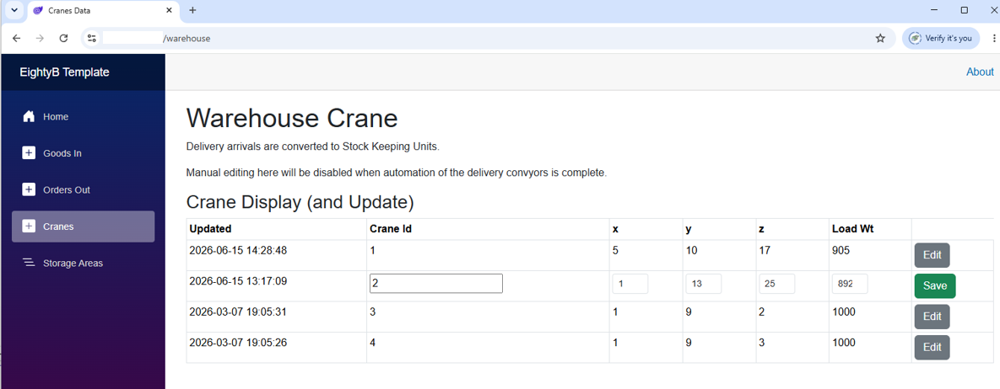
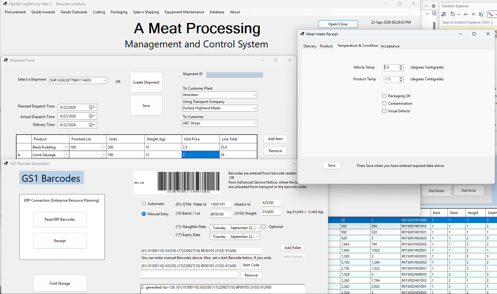

EightyB
If your current software setup is inadequate, EightyB can help
you take it where you want it to be.
I will analyse your existing processes and:
1. Add functionality while combining and preserving the user view.
2. Develop a bespoke application around the way your business actually works.
3. Single Pc systems can be converted to multi user systems, where a cloud database
holds the status information, to be read and modified from your Users' Pc's.
A Warehouse Crane Controller is shown below.

Apps can also be placed in web browsers:

I have focused recently on Meat Processing and Warehouse Management Systems.
